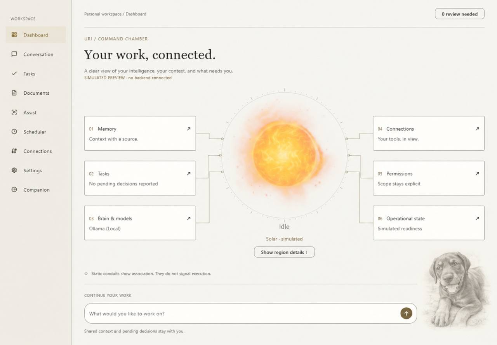
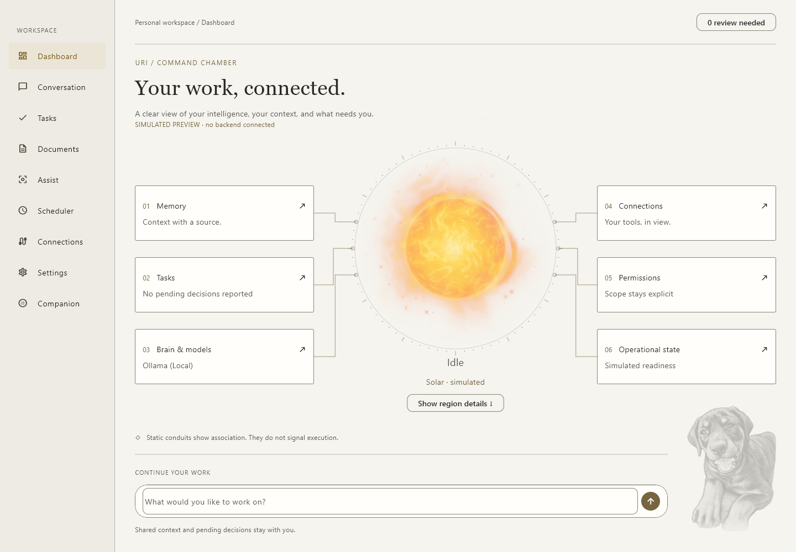

Actual Windows Flutter engine captures against your latest image and the approved Concept C themes. The puppy is a background-free, faded engraving at bottom right, blended into the matte canvas with no visible plate border, photo mount, caption or button. The original image is preserved.


The latest image is a compressed 1280 × 889 reference in the Snow palette. Use the historical theme study to compare Ivory/Ash colours. Flutter uses the actual Solar renderer; its animation phase differs from a still reference. Historical sidebar grouping, compass/card micro-details and composer utility links still differ. The transparent puppy is a generative background-removal edit, faded to 46% in Flutter. This comparison does not verify desktop transparency, cross-application click-through, audio, authentication or independent integration acceptance.